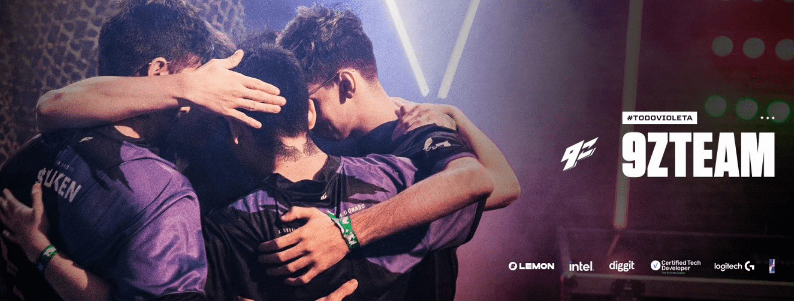
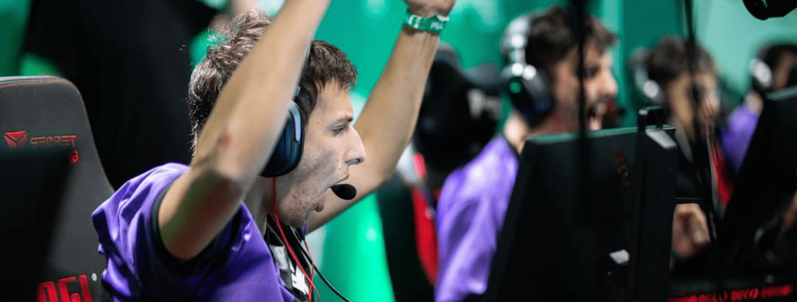
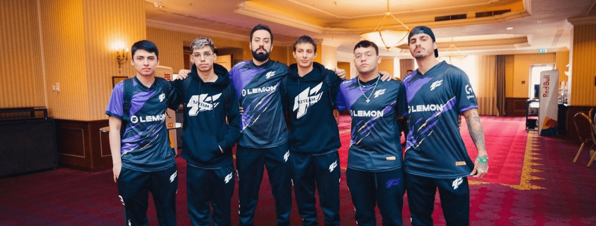
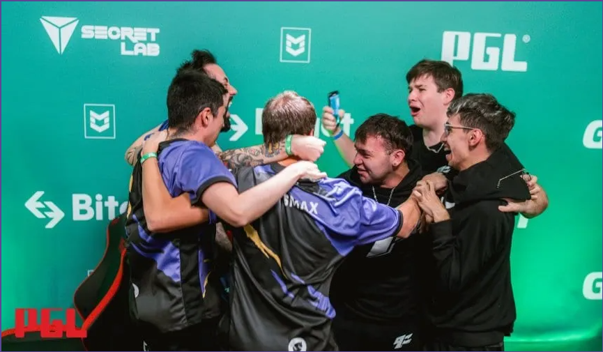
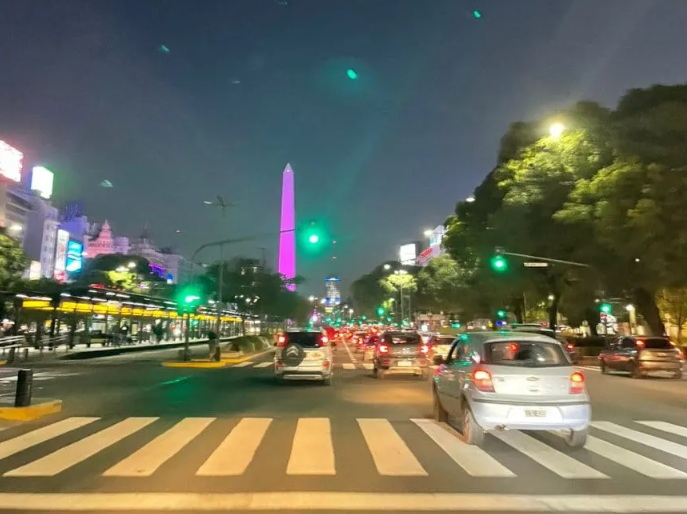
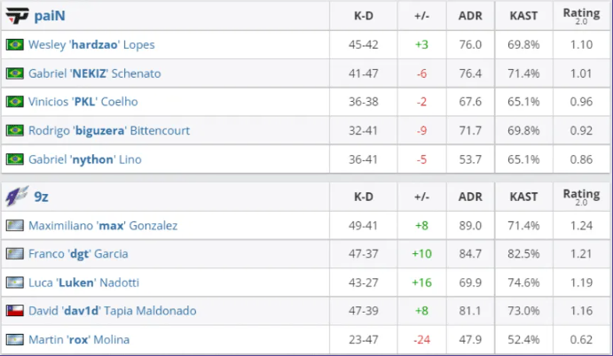
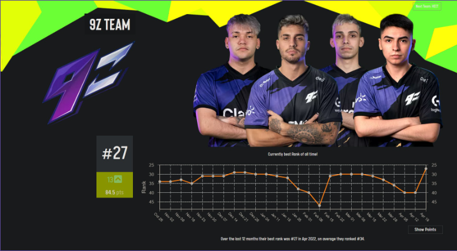

La escena internacional de CSGO espera ansiosa el Major de Amberes, Bélgica, que se disputará entre el 9 y el 22 de mayo entre 24 equipos y repartirá 1 millón de dólares, con 500 mil para el campeón. Para Latinoamérica no será un torneo más, ya que contará con la presencia del conjunto argentino 9z Team. Repasamos a todos los participantes.
El certamen organizado por PGL se dividirá en dos etapas. La primera será el Challengers, donde 16 equipos competirán en formato suizo y la mitad avanzará a la fase de Legends, instancia en la que esperarán otros ocho elencos. Allí, se jugará un nuevo suizo y los ocho mejores se clasificarán para los playoffs: cuartos, semis y final.

El momento más importante de la historia del CSGO argentino e hispanoamericano con la clasificación de 9z Team al Major de Amberes, Bélgica, se reflejó hoy en el ránking mundial de HLTV. El conjunto violeta alcanzó su registro más alto en el listado.
El equipo conformado por los argentinos Luken y Rox, los uruguayos Dgt y Max y el chileno Dav1d subió 19 puestos y se ubicó 26°, tres ubicaciones por encima de la histórica colocación que había logrado en febrero luego el top 4 obtenido en la ESL Challenger 48. De esta manera, el elenco violeta desterró el puesto 29 como el mejor para un equipo Latinoamericano en la historia -exceptuando a Brasil- y fijó un nuevo hito con la colocación 26. Además, se trata del tercer sudamericano del ránking, detrás de los brasileños de FURIA y MIBR. El otro equipo sudamericano que pegó un gran salto tras clasificarse al Major fue Imperial, con los brasileños Fallen, Fnx, Fer, Boltz y Vini. Ascendió 27 puestos para quedar 29no.
El torneo más importante de la escena de CSGO se disputará del 9 al 22 de mayo en Bélgica y repartirá 1 millón de dólares en premios, con 500 mil para el campeón. Reunirá a 24 equipos. Además de 9z, los otros que lograron los pasajes a través del RMR fueron: Furia, Imperial, MIBR, Complexity y Team Liquid.
9z Team hizo historia y pudo festejarlo a lo grande en el Obelisco, como un enorme acontecimiento del deporte argentino. El equipo de esports se clasificó para disputar el Major de Amberes, el torneo de CSGO más importante del mundo, en un hecho sin precedentes para la Argentina y para toda Latinoamérica. Para lograrlo, venció a los brasileños de Pain Gaming.
Como si fuese un triunfo en un Mundial de fútbol, el Obelisco, máximo símbolo de la Ciudad de Buenos Aires, se vistió de violeta a partir de las 19, con los colores del elenco argentino. Esto para homenajear a 9z Team que, tras disputar en Rumania el RMR Americas, consiguió una de las seis plazas que estaban en juego en el certamen, a disputarse entre el 9 y el 22 de mayo en Bélgica. El Violeta, que tiene como dueño al streamer Frankkaster, tuvo que batallar arduamente para lograr el objetivo. De estar 0-2 en el comienzo del torneo, acumuló cinco triunfos consecutivos ante rivales de gran jerarquía. En las semifinales del triangular decisivo, dejó en el camino a un Evil Geniuses repleto de figuras y ya en la final superó por 2-0 a Pain Gaming.
El Counter Strike es el deporte electrónico por excelencia en Argentina, pero recién en los últimos tres años comenzó a dar pasos importantes, ante la falta de inversión y de posibilidades. Primero fue en Brasil y más adelante llegaron algunos viajes a Estados Unidos y Europa. Pese a demostrar nivel y contar con talento, la región siempre estuvo excluida de los grandes eventos internacionales. Allá por 2016, Argentina tuvo la chance de jugar un Mundial de CSGO donde logró un inolvidable segundo puesto. Esto le dio la posibilidad a un equipo de instalarse en Estados Unidos bajo el nombre Miami Flamingos y despertar mucho interés, aunque ese proyecto finalizó abruptamente, tras un cambio de roster. Después de lo generado por Gale Force, Isurus consiguió muy buenos resultados en la región y también experiencias afuera. Ya en 2021, 9z Team dio el primer gran golpe de la historia de CSGO argentino en BLAST Premier, donde superó a los franceses de Team Vitality, ex número uno del mundo. Y ahora, en su primera oportunidad de disputar la clasificación al Major, consiguió el objetivo de manera formidable. Todo Violeta.
¡ARGENTINA ESTÁ EN EL MAJOR! ¡LATINOAMÉRICA ESTÁ EN EL MAJOR! ¡9Z TEAM ESTÁ EN EL MAJOR! En un hecho sin precedentes e histórico para el CSGO de la región, el elenco violeta se impuso por 2-0 ante los brasileños de Pain Gaming en la final del triangular del RMR Americas y disputará el certamen de Amberes, Bélgica, del 9 al 22 de mayo. Fue 16-11 (Mirage) y 19-17 (Dust II).
Se trata del hecho más importante de la historia para el CSGO argentino y latinoamericano, un resultado que parecía casi imposible hasta hace un par de años y que también se había hecho muy cuesta arriba hace apenas unos días, con el comienzo de este RMR Americas en Bucarest, Rumania. Es más, 9z Team comenzó realmente complicado. El equipo conformado por los argentinos Luken y Rox, los uruguayos Max y Dgt y el chileno Dav1d perdió sus dos primeros partidos del formato suizo, ante MIBR y Evil Geniuses y a partir de allí quedó contra las cuerdas, sin posibilidades de entregar otro encuentro. La historia se empezó a escribir contra Bad News Bears y siguió contra 00Nation, justamente el equipo de Try, el ex 9z que pasó a jugar con Coldzera para tratar de alcanzar el Major.
En el cruce decisivo del suizo, 9z Team eliminó a Sao Caetano y así se clasificó para el triangular que definiría al sexto y último elenco clasificado a Amberes. Llegó Evil Geniuses, un elenco plagado de figuras y ganadores de torneos de primer nivel, y el elenco albiceleste sacó a relucir un gran nivel, el mismo que mostraría ante Pain en la final. Cada jugador apareció cuando se lo necesitaba y todos brillaron por momentos, incluso Rox, el más criticado por los espectadores en cada torneo, quien obviamente tiene la difícil tarea de siempre quedar expuesto y no poder terminar con números en verde. Pero así funciona un equipo, y 9z fue eso durante todas las series más allá del gran nivel individual. ¿Qué decir de Luken? Un jugador que estuvo 1 año y medio sin competir y que llegó a la Violeta para cumplir el rol de awper que dejó Try y que nunca había llevado adelante. No sólo se acomodó, sino que aportó su pegue, su tranquilidad y mente fría. Dgt estuvo en un nivel excepcional, igual que Max, autor de varias jugadas para el recuerdo.
El torneo más importante de la escena de CSGO se disputará del 9 al 22 de mayo en Bélgica y repartirá 1 millón de dólares en premios, con 500 mil para el campeón. Reunirá a 24 equipos. Además de 9z, los otros que lograron los pasajes a través del RMR fueron: Furia, Imperial, MIBR, Complexity y Team Liquid. ¡Un momento histórico! ¡Inolvidable! A seguir soñando
Entre hoy y mañana se llevará a cabo el primer clasificatorio abierto de la Intel Extreme Masters Dallas, un torneo de primer nivel donde Sudamérica tiene una plaza y que se jugará en Estados Unidos en junio. Solo el ganador de la llave clasificará a la siguiente instancia, mientras que el resto de los equipos tendrán una segunda oportunidad entre el miércoles y el jueves. El formato es un bracket de eliminación simple, lo que quiere decir que aquel equipo que pierda quedará eliminado. Todos los partidos son a un mapa, excepto la Gran Final, que será una serie Bo3.
Algunos de los equipos inscriptos al momento de la producción de esta nota son 9z, Boca Juniors, Holkattes, Piso de Madera, River Plate, Stone Movistar, WAP y Windingo. En cuanto al clasificatorio cerrado, fueron invitados dos equipos brasileños: mibr e Imperial. Esto se debe a que son las dos escuadras mejor posicionadas en el ranking sudamericano de ESL, aunque resulta polémico ya que la mayoría de los puntos del Last Dance provienen del paso de FalleN por Team Liquid, mientras que mibr también sumó mucho con torneos de Norteamérica, donde estuvieron compitiendo en los últimos meses.

La instancia cerrada tendrá un total de cuatro equipos que se enfrentarán en un bracket de eliminación doble en partidas Bo3. La final por el viajé será un Bo5 donde el ganador de la llave de ganadores comenzará con un mapa de ventaja. En el torneo principal competirán los mejores del mundo. Allí estarán presentes los equipos partners de ESL: ENCE, FaZe Clan, FURIA, G2, NAVI, y Ninjas in Pyjamas. Mientras que, a través del ranking, consiguieron la invitación directa Astralis, Heroic, Players (Gambit) y Vitality. A todos ellos se sumarán dos equipos más de Europa, dos de Norteamérica, un sudamericano y un último de Oceanía. El prizepool total será de $250.000 USD.
En los últimos días, la comunidad de Counter-Strike: Global Offensive en Latinoamérica vivió algunos de sus momentos más grandes y tensos de su historia, luego de que la escuadra sudamericana de 9z consiguiese el anhelado boleto al Major de Amberes, organizado por PGL. Mientras que este hito por si solo fue motivo de celebración para todos en el medio, el equipo fundado por Francisco “Frankkaster” Postiglione sigue rompiendo récords al hacer historia en los rankings mundiales de HLTV y ESL.
Por un lado, el equipo conformado por jugadores como Franco "dgt" Garcia y Luca "Luken" Nadotti ya había rozado el Top 30 del ranking HLTV, gracias a su buena actuación en el ESL Challenger 48 que la colocó en el lugar 29. En el caso del ranking de ESL, 9z tuvo un impulso masivo comparado a sus apariciones en otros torneos del shooter táctico, al dar un salto de 13 posiciones hasta el puesto 27. Irónicamente, terminaron por solo un punto debajo de la escuadra de Evil Geniuses, a quienes los latinos eliminaron en el triangular final de RMR Americas. Gracias a este resultado y con su participación confirmada para el Major, puede que estemos ante el surgimiento de una nueva potencia en la escena de CS:GO, ya que esto le abre las puertas a 9z para aparecer en torneos más prestigiosos ante los mejores equipos del mundo.
Así que por ahora, tendremos que esperar hasta el 9 de mayo para saber si este equipo seguirá haciendo historia ante los otros 23 clasificados, quienes buscarán coronarse como los número 1 de este título.